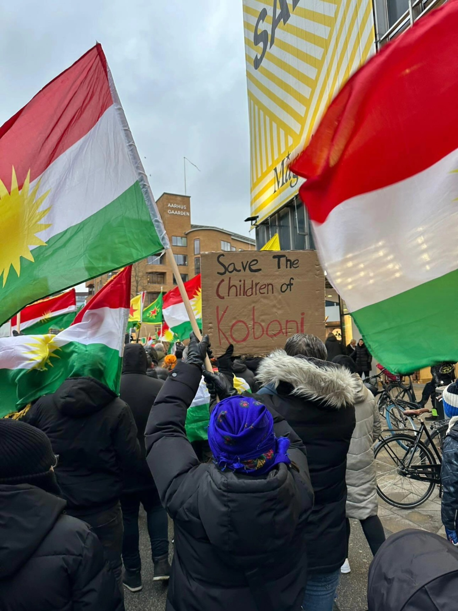
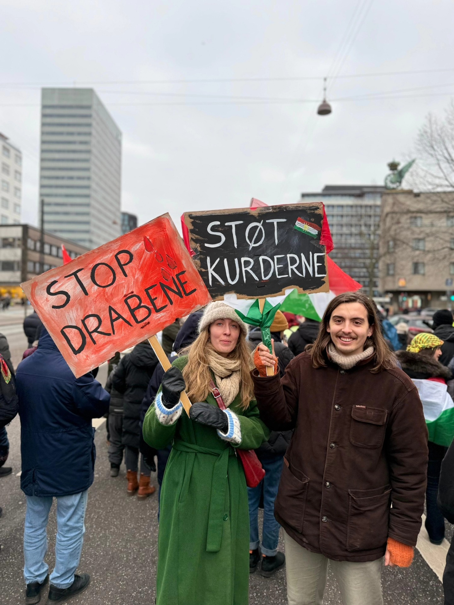
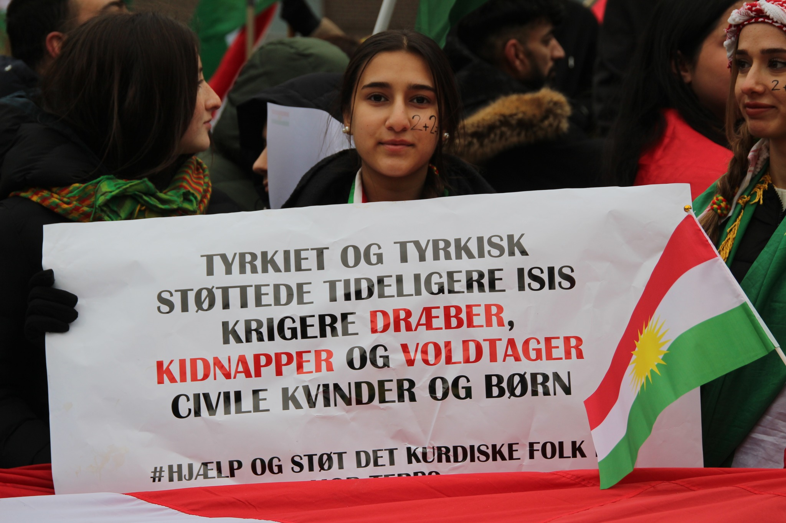
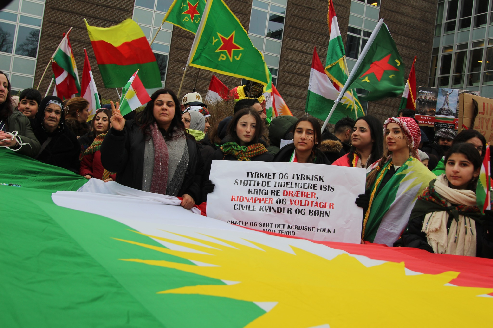

Billeder fra demonstrationer





Fordi stilhed også er et valg – og vi nægter at være stille
Vi demonstrerer som kurdere og kristne i Danmark, fordi vi vil gøre opmærksom på det, der sker i Rojava. Civile mennesker bliver ramt af vold, og deres grundlæggende rettigheder bliver krænket.
Vi vil ikke være stille, mens uskyldige mennesker lider.
Rojava er næsten helt lukket af. Byer som Kobane er belejret. Der kommer ikke nok mad, vand, medicin eller strøm ind.
Børn, kvinder og ældre lever i frygt hver dag. Mange har ingen steder at flygte hen.
De grupper, som verden tidligere kendte som ISIS og al-Qaeda, er igen aktive i området.
De bruger nye navne, men det er de samme mennesker og den samme farlige tankegang. Volden mod civile fortsætter.
Rojava er igen under angreb. Byer bliver bombet, og civile bliver straffet, selvom de ikke har gjort noget forkert.
Da internationale styrker trak sig tilbage, blev området efterladt uden beskyttelse. Det gav ekstremistiske grupper mulighed for at komme tilbage.
Over 20.000 unge kurdiske mænd og kvinder mistede livet i kampen mod ISIS.
De kæmpede ikke kun for kurdere – de kæmpede for Danmark, Europa og hele verden, så terror ikke skulle sprede sig.
I dag er de samme mennesker blevet glemt.
Det er de samme personer. Den samme ideologi. De samme overgreb mod civile.
Kun navnet har ændret sig – ikke volden.
Kristne, yezidier og andre minoriteter flygtede til Rojava, fordi det var et af de få steder, hvor man kunne leve frit.
Der var plads til forskellige religioner, respekt for kvinder og fredelig sameksistens. Nu er dette sted også i fare.
“Vi kæmpede mod ISIS, fordi ingen andre gjorde. Vi mistede vores venner og vores ungdom for at beskytte verden.”
— Kurdisk frontkæmper
“Vi flygtede til Rojava for at leve i fred som kristne. Nu er vi igen truet. Vi ved ikke, hvor vi skal tage hen.”
— Kristen kurdisk mor
❌ Påstand: “Vi angriber ikke kurdere.”
✅ Virkelighed: Civile bliver bombet, børn dræbt, og kvinder kidnappet.
Det handler om menneskeliv.
Situationen i Rojava kræver handling – ikke i morgen, men nu. Du behøver ikke være politiker eller journalist for at gøre en forskel.
Selv små handlinger kan redde liv, når mange gør det samme.
Hjælp os med at sprede budskabet. Jo flere der ser dette, jo sværere er det at tie Rojava ihjel.
MobilePay: 5325ED